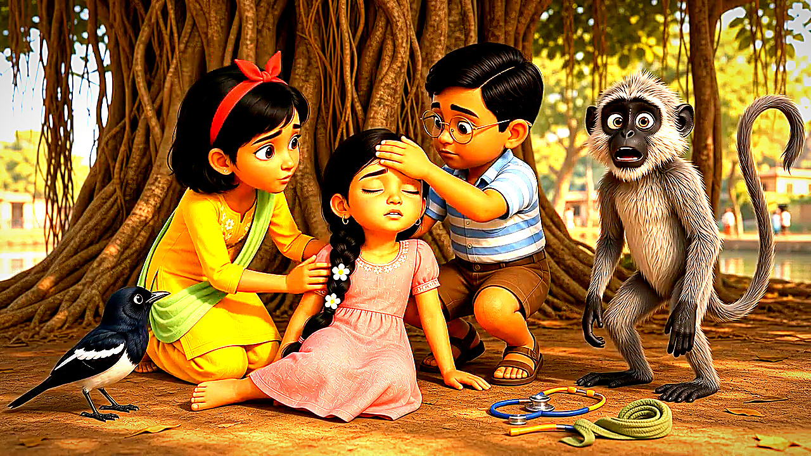
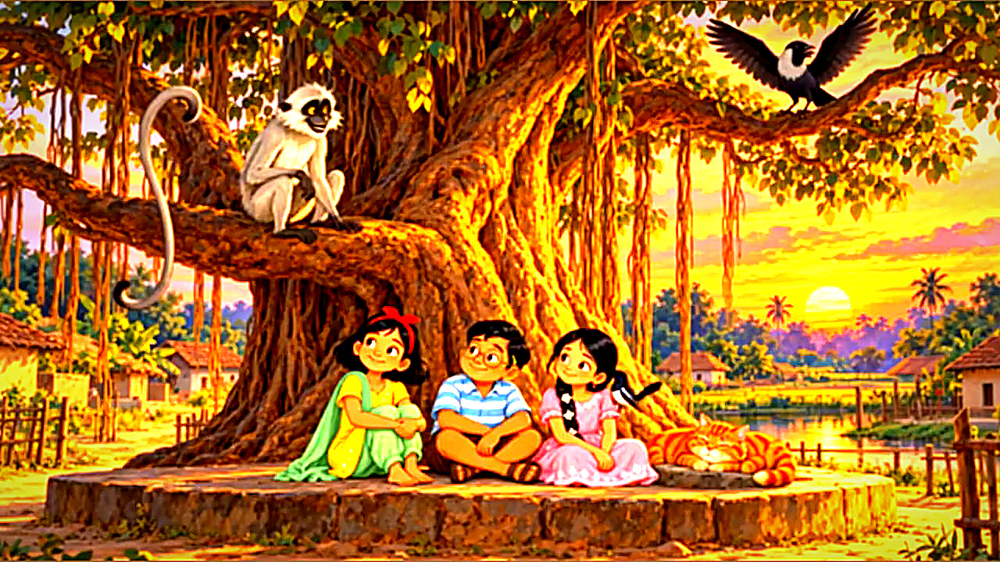
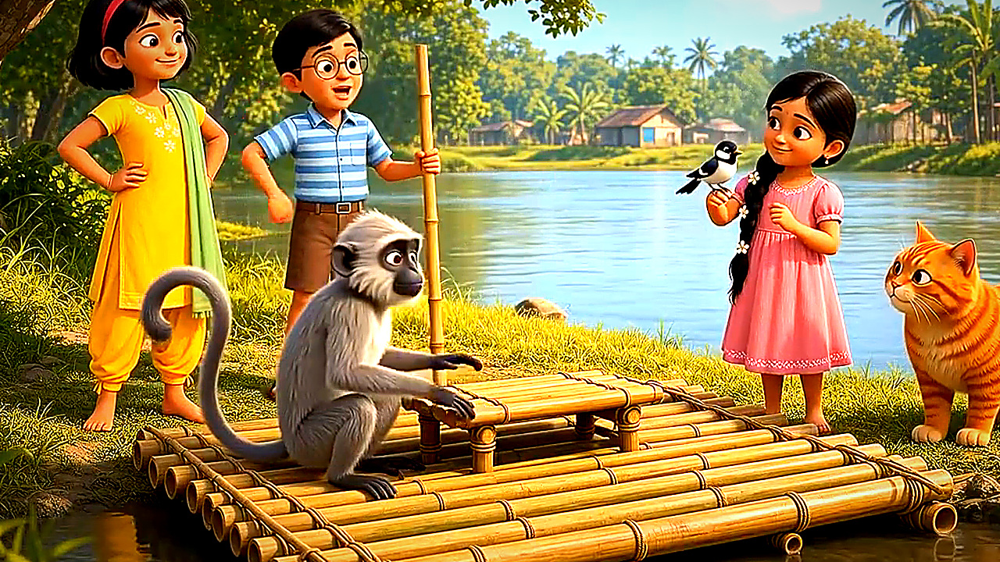
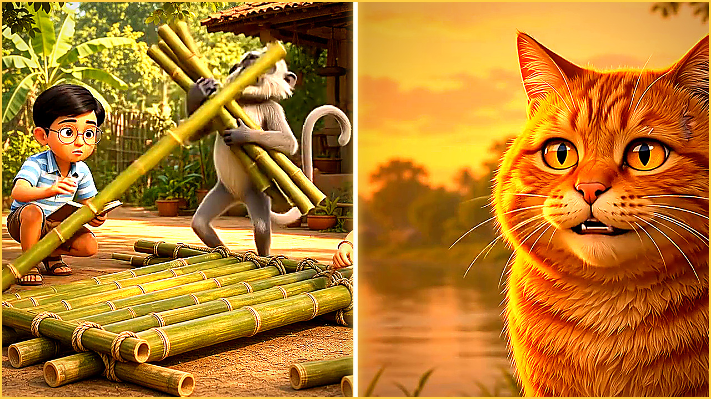
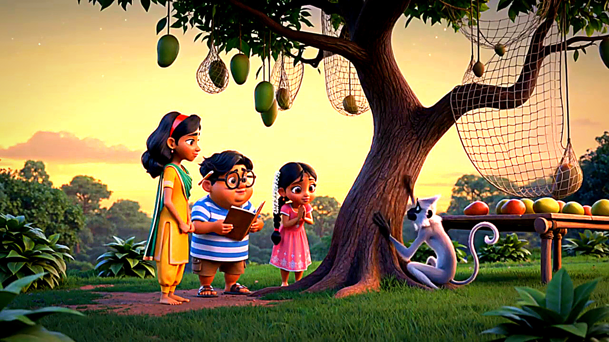

Everything we engineer and upload on every single episode—explained visually.
Most agencies just run your video through a generic translator and hand you an MP3 file. Below is the exact visual breakdown of all 8 production and YouTube Studio layers we execute on every video in your monthly pool.
We isolate your original Music & Sound Effects so background audio never cuts out.
YouTube’s native auto-dubbing lowers your entire audio track whenever a character speaks, killing your music score and sound effects. We split your master audio into separate stems before mixing:
We track whose mouth is moving on-screen and lock unique voices across your whole series.
Audio-only dubbers confuse characters when two people argue or when a child speaks off-screen. We scan a 360p visual proxy frame-by-frame to detect active mouth movement and lock each character to your permanent characters.json voice registry:

Zero timestamp drift on 30-minute episodes and 45-minute compilations.
When you feed a 30-minute video into a standard AI dubber, its context window overflows after ~12 minutes—causing missing lines or severe lip-sync drift in the second half. Our pipeline automatically slices any video over 12 minutes into 10-minute (`600s`) windows and merges offset-adjusted timestamps into a single master manifest:
Why DIY `.m4a` uploads hang in YouTube Studio “Pending”—and how we fix it.
If an uploaded audio track exceeds your video container duration by even 1 millisecond (which FFmpeg AAC `.m4a` exports do automatically due to trailing frame padding), YouTube Studio leaves the track stuck in PENDING forever. We clamp every track in-browser via OfflineAudioContext to (videoDurationMs / 1000) - 0.08s:
How a viewer in Madrid, São Paulo, Riyadh, or Tokyo discovers your video in YouTube Search.
Audio tracks alone don’t bring new clicks if your title and description are only in your native language. For every episode, we publish 12 culturally adapted High-CTR Titles, 12 Descriptions with localized `0:00` Key Moments Scene Chapters, and 12 synced `.srt` subtitle files. Click any language below to preview the live localized metadata:

El Robo de Mangos de Bodu | Historias Animadas de la Aldea Patapukur (Doblaje Español)
Bodu y sus amigos planean robar los mangos más dulces del huerto antes de la tormenta, pero un inesperado guardián cambia todo en la aldea de Patapukur...
3 universal text-free thumbnails per video—tested automatically for watch-time share.
If your thumbnail has English or Hindi text written on it, viewers in Brazil, Japan, or Saudi Arabia scroll past it. We design 3 text-free, high-contrast `1280×720` visual variants per episode and launch them inside YouTube Studio’s native Test & Compare (`TITLE_AND_THUMBNAIL_EXPERIMENT`):
 ARM A
ARM A

WINNER
ARM CWe wire every episode to trigger multi-video binge sessions across all 11 languages.
Getting an international viewer to click once is good; getting them to watch 4 episodes in a row is what triggers the YouTube homepage algorithm. We configure 2 Mid-Video Info Cards (`35%` and `68%`), a 3-Element End Screen, Official Playlist placement, and a Pinned 11-Language Creator Comment:

You never upload 23 files per video yourself. We deploy via YouTube Studio Editor role.
Inside YouTube Studio → Settings → Permissions, assign us the standard Editor role. Editors cannot delete videos, cannot view or touch AdSense payouts, and require zero password sharing.
Whenever you upload a new draft (or select back-catalog videos), we run Demucs stem separation, synthesize 11 audio tracks, clamp to `-80ms` Ogg Opus, and upload all 11 audio tracks, 12 SRTs, 12 titles/chapters, and 3 A/B/C thumbnails.
You open YouTube Studio, verify every language track, caption, and A/B/C thumbnail experiment is live, and publish on your normal schedule.